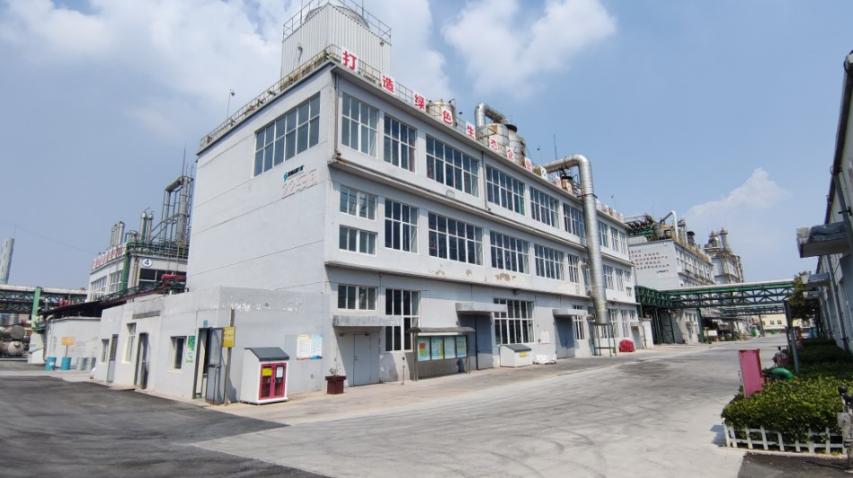

重大危险源信息
企业基本信息
企业地址：江苏宿迁生态化工科技产业园南化路22号
企业名称：宿迁联盛助剂有限公司
企业性质：有限责任公司
统一社会信用代码：91321311MA1PWY5A2W
重大危险源信息
重大危险源名称：22车间
重大危险源编码：321310084001
重大危险源位置：宿迁生态化工科技产业园南化路22号
重大危险源等级：四级
周边环境：附近无重点防护目标
风险类型：化学品类
重大危险源相关参数：年产2500吨光稳定剂944
重大危险源R值：6.208
重大危险源照片：

企业监管信息
主要负责人：项然
主要负责人职务：总经理
主要负责人联系电话：13852272747
技术负责人：桂宾
技术负责人职务：生产部部长
技术负责人联系电话：15250756365
操作负责人：王利坤
操作负责人职务：车间主任
操作负责人联系电话：18724194921
安全风险管控信息
工程技术
生产装置采用 DCS 自动控制系统对温度、 压力等工艺参数进行自动调节控制，该自控系统具有温度、 压力连续 记录远传功能。 同时设置安全仪表系统(SIS)，具备紧急停车功能。危险化学品储罐设置了连续记录远传 液位计、 超液位紧 急切断阀和可燃气体泄漏检测报警装置；已在危险化学品登记管理系统填报重大危险源信息，安全监测监控有关数据按要求接入危险化学品安全生产风险监测预警系统。
维护保养
重大危险源的安全设施和安全监测监控系统经调试运行合格按照国家有关规定，定期对重大危险源的安全设施和安全监测监控系统进行检测、检验， 并进 行经常性维护、保养，保证重大危险源的安全设施和安全监测监控系统有效、可靠运行。维护、保养、检测有相关记录，专人管理。
人员操作
有较为完善的重大危险源安全管理规章制度和安全操作规程，能够执行。所有从业人员均经安全培训合格后上岗。
应急措施
配备了空气呼吸器及化学防护服、堵漏器材等应急 器材和设备。有重大危险源事故应急预案，建立了应急救援组织、配备了应急救援人员， 配备了必要的防护装备及应急救援器材 、设备、物资，且状态完好。
隐患排查信息
| 排查岗位 | 排查责任人 | 排查任务 | 排查周期 |
主要负责人 |
项然 | 1.核查技术负责人、操作负责人是否按规定时间、规定内容履行职责。 2.确认重大危险源安全管理制度、操作规程是否实用有效，操作人员是否按制度和操作规程执行。 3.核查是否存在重大安全隐患，确认各类安全隐患是否及时整改。 4.核查重大危险源的管理和操作岗位人员数量、学历和资格是否满足要求，是否进行安全培训，是否具备安全管理、操作和应急方面的能力。 5.确认有关重大危险源的安全投入是否到位，是否合理有效使用安全费用。 6.确认重大危险源安全监测监控有关数据是否接入危险化学品安全生产风险监测预警系统。 7.确认重大危险源现场安全设施是否完好。 8.确认重大危险源专项应急预案是否每半年演练一次是否达到演练效果。 9.核查双重预防机制数字化运行效果是否达到优良等级。 |
每半年 |
技术负责人 |
桂宾 | 1.现场确认重大危险源温度、压力、液位、流量、组份等信息的不间断采集和监测系统以及可燃气体和有毒有害气体泄漏检测报警装置是否具备信息远传、连续记录、事故预警、信息存储等功能。 2.现场核查重大危险源安全阀、压力表、液位计、可燃有毒气体报警仪、视频监控等是否存在故障、报警等信息，有关设备是否存在超期未检问题。 3.确认重大危险源设备设施的设计、制造、安装、使用、检测、维修、改造和报废，是否符合国家标准或者行业标准。 4.确认重大危险源与周边安全间距是否符合安全要求。对于超过个人和社会可容许风险值限值标准的重大危险源，组织采取相应的降低风险措施，直至风险满足可容许风险标准要求。 5.组织审查涉及重大危险源的外来施工单位及人员的相关资质、安全管理等情况。重大活动、重点时段和节假日前组织进行重大危险源安全风险隐患排查。 6.现场审查涉及重大危险源的工艺、设备、人员变更方案，确保变更过程风险受控。 7.针对重大危险源安全风险隐患排查情况，组织制定管控措施和治理方案并监督落实。 8.组织演练重大危险源专项应急预案和现场处置方案。 |
每季度 |
操作负责人 |
王利坤 | 1.检查岗位操作人员是否严格执行重大危险源安全生产规章制度和操作规程，是否严格遵守劳动纪律。 2.检查涉及重大危险源的特殊作业、检维修作业是否按规定办理作业票，监护人是否在场，作业过程有无违章，安全风险是否受控。 3.检查重大危险源安全隐患是否整改到位，装置设备是否存在带“病”运行情形。 4.检查涉及重大危险源的外来施工单位及人员有无违章行为。 5.检查重大危险源的设备设施(包括动静设备、自控系统、安全设施等)是否完好。检查应急设施、应急装备、应急器材、消防设施是否完好。 6.确认现场监控设施是否完好，是否有效覆盖重大危险源区域。 7.确认现场可燃、有毒气体报警器和火灾报警器是否处于正常状态，报警信息是否及时处置。 8.检查危险化学品安全生产风险监测预警系统，警示信息是否及时处置，系统是否正常运行。 9.检查现场隐患排查人员是否熟悉排查流程，是否运用移动终端开展隐患排查，并形成闭环管理。 |
每周 |